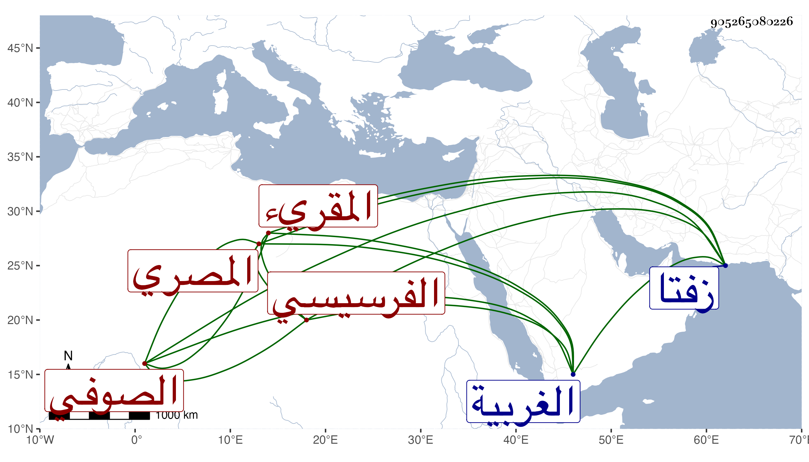

0902Sakhawi.DawLamic.ITO20230111-ara1.EIS1600.905265080226
Biography ID: 905265080226
567
محمد بن حسن بن علي بن عبد الرحمن الشمس الفرسيسي المصري الصوفي المقريء ويعرف بالفرسيسي بفتح الفاء وسكون الراء وكسر المهملتين بينهما تحتانية قرية شهيرة بين زفتا وتفهنا من الغربية . ولد في رابع رجب سنة تسع عشرة وسبعمائة وأسمع على أبي الفتح بن سيد الناس وأحمد بن كشتغدي وغيرهما ، ومما سمعه على أولهما السيرة النبوية له يقال بفوت ومنتقى من الخلعيات وعلى ثانيهما جزء أبي جعفر المطيري وحدث سمع منه الأئمة ومنهم شيخنا وقال : مات في رجب سنة ست . وهو في عقود المقريزي وأول ما علم به حين السماع على ابن حاتم في السيرة كان من جملة الحاضرين وحينئذ تصدر مع ابن حاتم للإسماع رحمه الله .
